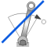

LinearSpeedDependentTorqueLinear dependency of torque versus speed |

|
Information
This information is part of the Modelica Standard Library maintained by the Modelica Association.
Model of torque, linearly dependent on angular velocity of flange.
Parameter TorqueDirection chooses whether direction of torque is the same in both directions of rotation or not.
Parameters (4)
| useSupport |
Value: false Type: Boolean Description: = true, if support flange enabled, otherwise implicitly grounded |
|---|---|
| tau_nominal |
Value: Type: Torque (N·m) Description: Nominal torque (if negative, torque is acting as load in positive direction of rotation) |
| TorqueDirection |
Value: true Type: Boolean Description: Same direction of torque in both directions of rotation |
| w_nominal |
Value: Type: AngularVelocity (rad/s) Description: Nominal speed |